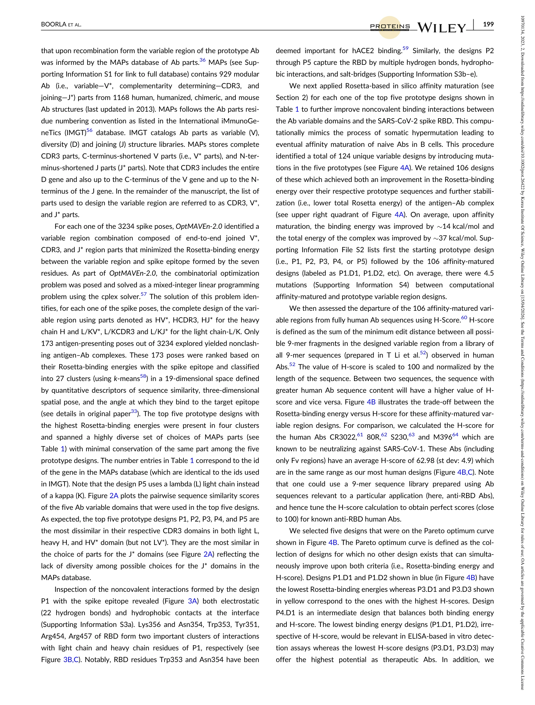
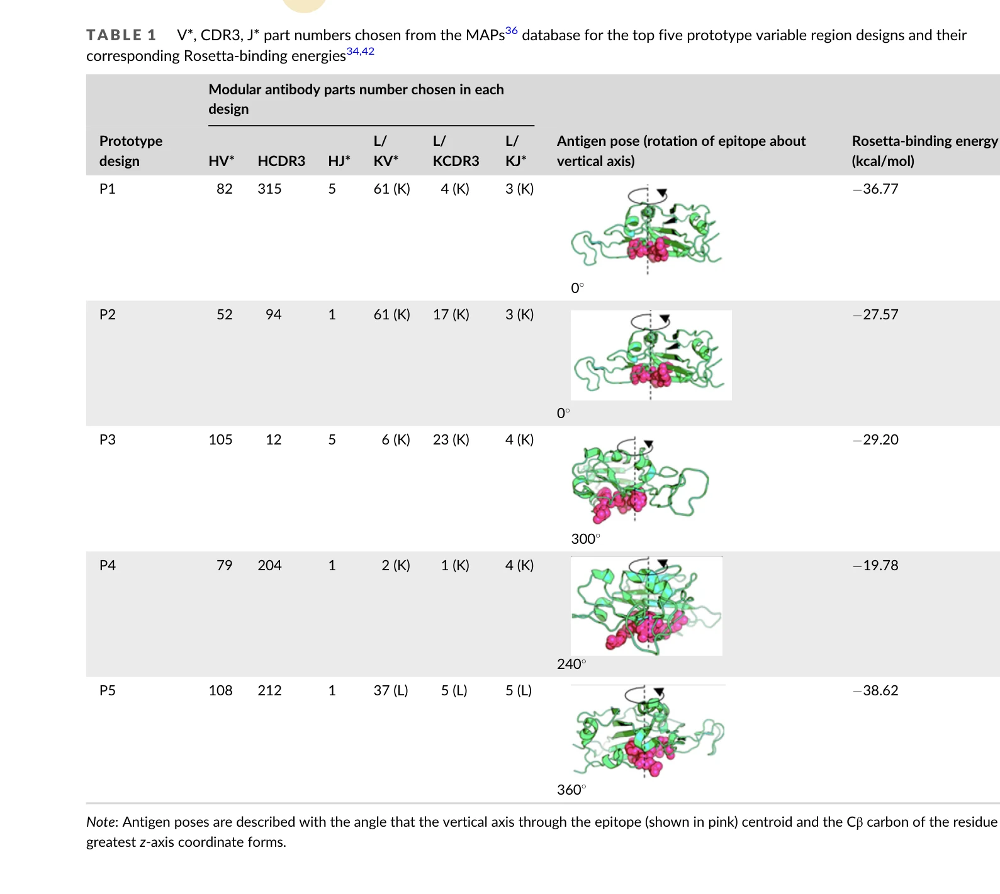

저자: Veda Sheersh Boorla, Ratul Chowdhury, Ranjani Ramasubramanian, Brandon Ameglio, Rahel Frick, Jeffrey J. Gray, Costas D. Maranas | 날짜: 02/2023 | DOI: 10.1002/prot.26422

Figure 3B,C). Notably, RBD residues Trp353 and Asn354 have been
OptMAVEn-2.0을 이용한 de novo 항체 설계와 Rosetta 기반 평가를 통해 SARS-CoV-2 스파이크 단백질 RBD에 대한 고친화도 항체 가변영역(Fv)을 계산적으로 설계하고 검증했다.

Figure 5 shows the sequence alignment of the five selected
총평: 이 연구는 SARS-CoV-2 RBD를 표적하는 de novo 항체 설계의 첫 체계적 시도로, 계산적 방법과 인간 서열 유사도를 통합한 혁신적 워크플로우를 제시한다. 실험적 검증이 후속되면 신흥 변이주 대응 항체 개발의 새로운 패러다임을 확립할 수 있는 가능성이 높다.